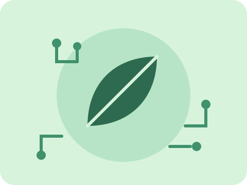
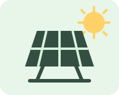
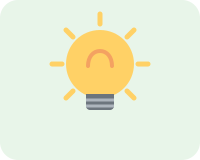
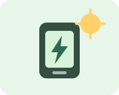
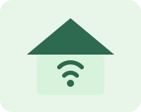
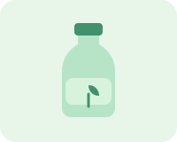
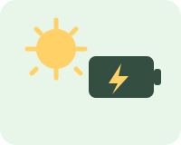
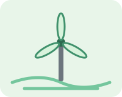
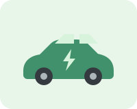
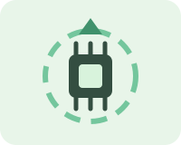

Economia de energia
Apagar luzes, usar aparelhos eficientes e aproveitar a luz natural reduzem o consumo de eletricidade e o valor da conta no fim do mês.
A tecnologia sustentável une inovação e cuidado com o meio ambiente para economizar energia, reduzir resíduos e construir um futuro sustentável. Conheça práticas, produtos sustentáveis e tecnologias verdes que transformam o dia a dia.
Conhecer as soluções sustentáveis
Tecnologia sustentável é o conjunto de soluções criadas para atender às necessidades das pessoas com o menor impacto ambiental possível. Ela reúne produtos, processos e serviços que economizam energia, reduzem resíduos e utilizam fontes renováveis.
A inovação sustentável é importante porque mostra que o desenvolvimento e a sustentabilidade podem caminhar juntos: a tecnologia verde gera energia limpa, preserva os recursos naturais e prepara o caminho para um futuro sustentável.
Em resumo: fazer mais, gastando menos energia e poluindo menos o planeta.
Pequenas mudanças na rotina e a adoção de inovações sustentáveis fazem toda a diferença. Confira práticas essenciais para cuidar do meio ambiente:
Apagar luzes, usar aparelhos eficientes e aproveitar a luz natural reduzem o consumo de eletricidade e o valor da conta no fim do mês.
Separar materiais recicláveis garante que plásticos, papéis, vidros e metais voltem ao ciclo de produção em vez de ir para o aterro.
Reparar, reutilizar e descartar corretamente celulares e computadores evita a contaminação do solo e da água por substâncias tóxicas.
Fontes como a energia solar e a eólica geram energia limpa, sem emitir poluentes na atmosfera durante a produção de eletricidade.
Comprar apenas o necessário e preferir produtos sustentáveis diminui a pressão sobre os recursos naturais do planeta.
Optar por transporte coletivo, bicicletas e veículos elétricos reduz emissões e melhora a qualidade de vida nas cidades.
Alguns produtos sustentáveis ajudam a economizar energia, água e materiais no dia a dia. Veja opções simples de adotar em casa:

Capturam a luz do sol e transformam em energia renovável para a casa, reduzindo os custos e as emissões de poluentes.

Consomem até 80% menos energia que as lâmpadas comuns e têm uma vida útil muito mais longa, gerando menos descarte.

Recarregam celulares e outros dispositivos usando apenas energia solar, sendo ideais para viagens e uso ao ar livre.

Sensores e tomadas inteligentes controlam luzes e aparelhos automaticamente, evitando desperdícios de energia desnecessários.

Garrafas, sacolas e copos reutilizáveis reduzem o consumo de plásticos descartáveis e a quantidade de resíduos gerados.

Armazenam energia de forma eficiente e ajudam a reduzir a compra de descartáveis, diminuindo o impacto ambiental.
A inovação sustentável já está transformando o mundo. Conheça tecnologias sustentáveis para um futuro melhor:
Energia limpa e abundante, gerada pelo sol, é uma das fontes renováveis que mais crescem no Brasil e no mundo.

A força dos ventos movimenta turbinas que produzem eletricidade sem queimar combustíveis nem poluir o ar.

Reduzem a emissão de gases poluentes nas cidades e diminuem a dependência de combustíveis fósseis.
Dispositivos conectados monitoram o consumo de água e energia, tornando casas e cidades mais eficientes.

Processos que recuperam metais e componentes de eletrônicos antigos, evitando o descarte incorreto no meio ambiente.
Sensores e plataformas digitais controlam água, energia e resíduos em imóveis e cidades, reduzindo desperdícios.
Adotar a tecnologia para o meio ambiente traz vantagens para o planeta e para a qualidade de vida de todos:
Aparelhos eficientes e fontes renováveis reduzem o consumo mensal de eletricidade.
Menos queima de combustíveis fósseis significa ar mais limpo nas cidades.
Reutilizar e reciclar diminui o volume de resíduos enviados aos aterros sanitários.
O uso consciente garante água, florestas e minerais para as próximas gerações.
Cidades mais limpas, silenciosas e saudáveis melhoram o bem-estar de toda a população.
Dúvidas comuns sobre tecnologia sustentável e o cuidado com o planeta:
É a tecnologia desenvolvida para reduzir impactos ambientais, utilizando recursos renováveis, economizando energia e diminuindo resíduos ao longo de todo o ciclo de vida dos produtos.
Ela permite gerar energia limpa, monitorar o consumo de água e eletricidade, otimizar processos industriais e agrícolas e reciclar materiais, tornando a relação entre as pessoas e o planeta mais equilibrada.
Comece com hábitos simples: economize energia, separe a reciclagem, evite produtos descartáveis e escolha produtos sustentáveis, como lâmpadas LED e itens reutilizáveis.
Energia solar, energia eólica, veículos elétricos, Internet das Coisas (IoT) e reciclagem tecnológica estão entre as principais inovações que protegem o meio ambiente.
Adote a tecnologia sustentável no seu dia a dia, compartilhe o que aprendeu e ajude a construir um futuro sustentável para todos.
Ver práticas sustentáveis